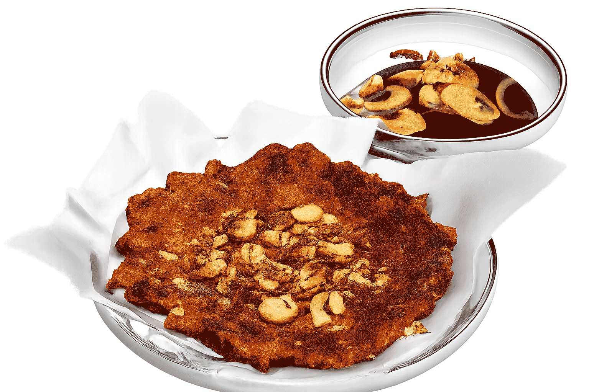

Aurelia · Japanese Kitchen
Choose your dish reveal
Tap any style to watch the dish appear. Heart the ones you like to build a shortlist.

Almond Crusted Crispy
Client shortlist
Styles you hearted appear here. Copy the list and send it to us.